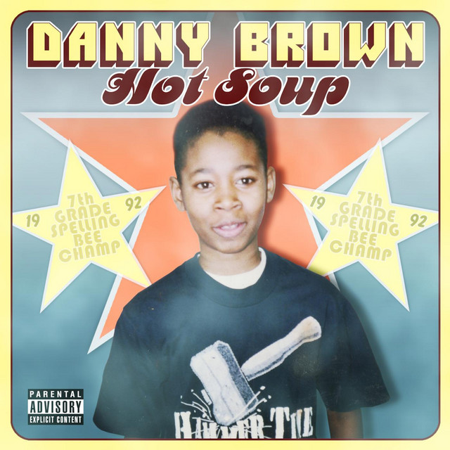

Danny Brown's first Mixtape, Hot Soup
"Hot Soup"
"Hot Soup" was released on July 1st, 2008 and its cover art features a young Danny Brown, with two stars in the background that are titled "7th grade spelling bee champ, 1992."
You can listen to Hot Soup on spotify here: visit spotify.com!